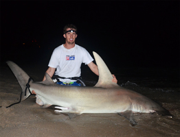

About Us
BlacktipH Fishing is an online fishing show dedicated to big game fishing in both freshwater and saltwater environments. We also are dedicated to fishing education with the hope that other anglers can enjoy the same adventures as we do. BlacktipH Fishing is full of a variety of fishing adventures from monster sharks in Florida to muskies in Canada.
Our host, Joshua Jorgensen, grew up fishing in Canada on Lake St. Clair. As his hunt for big fish expanded, he moved to saltwater fishing in pursue of sharks and other large pelagic predators. He is the founder and director of the "Blacktip Challenge Shark Fishing Tournament" and the co-founder of the "Muskie Challenge Fishing Tournament". Jorgensen is a lead committee member of the ILSFA (International Land-Based Shark Fishing Association). His fishing adventures have been featured in numerous media articles, including: Global Angler, Spiegel TV, Spiegel Magazine, Sun Newspapers and Living Magazine.